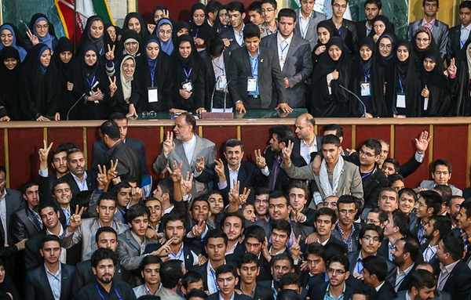

مجلس دانش آموزی جمهوری اسلامی ایران نهادی صنفی مشورتی و زیر مجموعه سازمان دانش آموزی میباشد که با هدف : ۱. فراهم آوردن زمینه تربیت اجتماعی و سیاسی و مدیریتی دانش آموزان مبتنی بر فلسفه تعلیم و تربیت اسلامی ۲. ترویج فرهنگ مشارکت جویی ، تعاون و همکاری ، مسئولیت پذیری و زمینه سازی برای مشارکت فکری و عملی دانش آموزان در عرصه های مختلف آموزش و پرورش ۳. ترویج فرهنگ گفت و گو و مشورت بین دانش آموزان ۴. بهره گیری از نظرات دانش آموزان در اصلاح قوانین، مقررات و طرح ها و برنامه های مرتبط با آن ها ۵. آشنایی بیشتر دانش آموزان با مقوله های اجتماعی، سیاسی و اقتصادی داخلی و خارجی ۶. تقویت روحیه خود اتکایی و خود باوری و رعایت اخلاق اجتماعی ۷. تقویت هویت اسلامی و ایرانی و تحکیم و ترویج ارزش های انقلاب اسلامی در ششصد و هفتاد و دومین جلسه شورای عالی آموزش و پرورش جمهوری اسلامی ایران مصوب و از سال ۱۳۸۰ آغاز به کار کرد از مهمترین وظایف و اختیارات مجلس دانش آموزی میتوان به موارد زیر اشاره کرد : ۱. بحث و بررسی درباره چگونگی ارتقاع فعالیت های آموزشی و تربیتی دانش آموزان و به کار گیری فناوری های نوین در مدارس ۲. بحث و بررسی درباره مسائل دانش آموزی ، مقررات تحصیلی و انضباطی و ارائه طرح ها و پیشنهادات متناسب برای بهبود آن ۳. بحث و تبادل نظر در مورد راهکارهای تقویت تربیت دینی،اخلاقی،علمی،فرهنگی و اجتماعی دانش آموزان و مدارس و حضور فعال دانش آموزان و مدارس در عرصه های ملی و جهانی ۴. بحث و بررسی درباره چگونگی بهینه سازی مناسبات دانش آموزان ، خانواده ها و مدارس ۵. بحث و بررسی درباره برنامه های درسی و فعالیت های فوق برنامه و ارائه پیشنهاد برای غنی سازی آنها ۶. بحث و بررسی درباره انتظارات و تعامل دانش آموز،خانواده و جامعه و ارائه پیشنهاد برای نزدیک ساختن انتظارات و تعاملات ۷. اظهار نظر در مورد پیش نویس طرح ها و لوایح ارجاحی مرتبط با دانش آموزان از سوی وزارت آموزش و پرورش، شورای عالی آموزش و پرورش یا مجلس شورای اسلامی ۸. بررسی و تعیین شیوه های تکریم و تجلیل دانش آموزان از منزلت معلم ۹. بحث و بررسی درباره مسائل نوجوانان در خصوص انتخاب رشته ، کار و آینده تحصیلی و شغلی ۱۰. بحث و بررسی درباره وظایف و حقوق نوجوانان در جامعه ، خانواده و مدرسه ۱۱. بحث و بررسی و پیشنهاد راهکار های مناسب برای تقویت روحیه ایرانی و اسلامی دانش آموزان ۱۲. ارتباط و تبادل تجربیات با مجالس دانش آموزی مشابه در دیگر کشور ها ۱۳. بحث و تبادل نظر در مورد چگونگی مشارکت دانش آموزان در فعالیت های آموزشی، پرورشی و اجرایی مدارس ۱۴. بحث و بررسی درباره ارتقای سلامت ایمنی و ورزشی دانش آموزان
مطالعه اولیه برای تشکیل مجلس دانش آموزی از حدود سال 1377 آغاز شد و تحقیقات ملی و بین المللی ، معاونت پرورشی و تربیتی وقت آموزش و پرورش را در تشکیل این مجلس مصمم تر کرد. وزارت آموزش پرورش تصمیم گرفت در سال تحصیلی 1378 – 1377 در 30 درصد دبیرستان های کشور با اهدافی همچون ارج نهادن به شخصیت دانش آموزان، استفاده از نظرات و واگذاری مسئولیت به آنان تقویت و ارتقاء روحیه مشارکت در ابعاد مختلف و ایجاد تقویت قدرت تصمیم سازی، روحیه همدلی، تعادل فکری و مسئولیت اجتماعی و اجرایی برگزار نماید. در گام اول این طرح با برگزاری انتخاباتی هماهنگ در 30 درصد دبیرستان های ایران آغاز گردید و نمایندگان منتخب دانش آموزی مدارس برای پیگیری نظرات و پیشنهادات همکلاسی های خود فعالیت را آغاز نمودند. هم زمان با برگزاری این طرح پروژه ای، پژوهشی برای سنجش میزان تاثیرگذاری این طرح مشارکتی در ارتقای روابط اجتماعی حاکم بر ساختار مدیریتی مدارس با نمونه آماری 2607 نفر از دانش آموزان دبیرستانی برگزار شد و با 5/93 درصد میزان رضایت دانش آموزان از برگزاری آن استقبال شد. یکی از سیاست های وزارت آموزش و پرورش رویکرد دانش آموز محوری است که تشکیل شوراهای دانش آموزی نقش بسزایی در تحقق این سیاست داشت به واقع این نوع رویکرد ها گام بلندی در جهت به رسمیت شناختن نظرات و مطالعات دانش آموزان بود که زمنیه مشارکت و تصمیم سازی نوجوانان برای تعیین سرنوشت خود را فراهم می آورد و امکان بررسی نقاط ضعف و قوت نظام تعلیم و تربیت از دیدگاه دانش آموزان را میسر می ساخت.
همانگونه که در کلیات به اختصار بیان شده، مجلس دانش آموزی در ایران پس از به باز نشستن تجربه سه ساله شوراهای دانش آموزی در مدارس راهنمایی و دبیرستان های سراسری کشور ایجاد شد و آموزش و پرورش لازم دانست تا در زمینه تشکیل این مجلس، به عنوان اولین مجلس جوانان جمهوری اسلامی ایران اهتمام ورزد که با این رویکرد نهادی صنفی – مشورتی شکل گرفت که آیین نامه مصوب شورای عالی آموزش و پرورش بود و اولین گامش را با هدف تدوین طرح راه اندازی شوراهای دانش آموزی در مدارس برداشت.
بهرگیری و استعداد نمایندگان مجلس دانش آموزی از طرح، لایحه، بیانیه، سند، منشور و ... به منظور انعکاس و بازتاب خواسته ها و مطالعات دانش آموزان به متصدیان آموزش و پرورش کشور، گواهی این مدعاست که مجلس دانش آموزی نهادی صنفی مشورتی می باشد .
اولین نشست مجلس دانش آموزی کشور، در مهر ماه سال ۱۳۸۰ در محل ساختمان مجلس در بهارستان با حضور نمایندگان موسس تشکیل شد.
از سال ۱۳۸۰ تاکنون، ۱۲دوره مجلس دانش آموزی برگزار گردیده که در واقع مجلس دانش آموزی بیش از هر چیز، مجموعه ی ۱۵۰ نوجوان پرانرژی و آرمان گرا است که مهم ترین خواسته شان این است که سهمی در آبادانی این آب و خاک داشته باشند ۱۵۰ نوجوان که با جدیت و امیدی سرشار در بحث و گفت و گو با یکدیگر و با مسئولان وزارتخانه پیگیر آراء و پیشنهادهای خود هستند و گویی به دنیا آمدند تا دنیا را به جای بهتری برای زیستن تبدیل کنند.
اکنون مجلس دانش آموزی کشور با ۱۵۰ نماینده ( ۱۴۲ نماینده عادی، ۴ نماینده دانش آموزان اقلیت دینی، ۲ نماینده استثنایی و ۲ نماینده مدارس خارج از کشور ) متشکل از ۷۵ نماینده دختر و ۷۵ نماینده پسر که هر ۲ سال یکبار از میان دانش آموزان سراسر کشور در پی برگزاری انتخابات سراسری ۳ مرحله ای به ترتیب در سطح مدارس، مناطق و استانها شکل می گیرد .
همچنین در اجرای ماده ۷ آیین نامه تشکیل مجلس دانشآموزی به منظور بحث و بررسی پیرامون مسائل، مشکلات و مقررات تحصیلی و انضباطی، برنامه ها و فوق برنامه های دانشآموزی، رسیدگی به مسائل و مشکلات نوجوانان و جوانان و همچنین بررسی و تنظیم طرح ها و برنامه های دانشآموزی، کمیسیون های تخصصی در مجلس تشکیل می شوند.
- کمیسیون ها تحت عناوین چهارگانه زیر تشکیل میشوند .
فرهنگی - هنری و اجتماعی
علمی و آموزشی
اخلاقی و تربیتی
زیرساخت
مجالس دانش آموزی استانی نیز به منظور فراهم نمودن زمینه برای فعالیت بیشتر دانش آموزان در عرصه های اجتماعی و سیاسی با مشارکت و همفکری یکدیگر که مورد تاکید سند تحول بنیادین آموزش و پرورش می باشد و همچنین برای تحقق بسته تحول آفرین سازمان دانش آموزی جمهوری اسلامی ایران با عنوان هر دانش آموز یک نقش اجتماعی ابلاغی سال ۱۳۹۹ تشکیل شدند
مجلس دانش آموزی استان لرستان به عنوان یکی از ده استان پیشرو در تحقق این اقدام در پی انتخابات سه مرحله ای از مدرسه تا استان در آذرماه ۱۳۹۹ به صورت تفکیک جنسیت تشکیل شد
ریاست سومین دوره مجلس دانش آموزی پسران استان لرستان بر عهده حسین رباطی از ناحیه یک خرم آباد و مجلس دانش آموزی دختران استان بر عهده طراوت داشاب از خرم آباد می باشد .
تعداد نمایندگان نخستین دوره مجلس دانش آموزی پسران و مجلس دانش آموزی دختران استان مجموعا ۶۶نفر بوده و به تفکیک ، هر مجلس دارای ۲۳نماینده است (متشکل از ۱۹نماینده شهرستانها و مناطق ، ۲ نماینده از دانش آموزان با نیاز های ویژه و ۲ نماینده از دانش آموزان مناطق عشایری استان)
تعداد نماینده هر شهرستان/ منطقه بر اساس تعداد دانش آموز آن شهرستان/منطقه می باشد
مجلس دانش آموزی استان لرستان همچنین دارای چهار کمیسیون تخصصی است در آن نمایندگان مسائل و مشکلات دانش آموزان استان را در چهارحوزه زیر به بحث و بررسی میپردازند :
۱. تربیتی و پرورشی
۲. زیرساخت
۳. فرهنگی و اجتماعی
۴. آموزشی